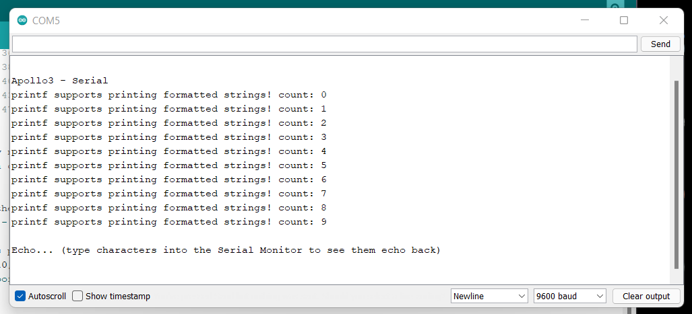

Introduction
This lab was an introduction to using the Artemis board. I already had the Arduino IDE installed, so I just followed the directions on the course website's Lab 1 page to download a library for the Artemis board. I ran standard blinky code, an Artemis example to test serial connection, and two analog reading scripts: one for the temperature sensor and the other for the microphone.
Here is a video of Arduino's Blink.ino code working
Here is an image of my serial output from Example04_Serial.ino from Artemis's examples.
Here is an image of my serial output from Example02_analogRead.ino from Artemis's examples. This script specified a port for the temperature sensor by using a predefined macro. That's one of the reasons why it was necessary to use the code from the Artemis library.
Here is a (possibly loud and certainly annoying) video of me testing the microphone on the Artemis board by running the Example1_MicrophoneOutput.ino script. The serial output shows the highest frequency of the sound byte.